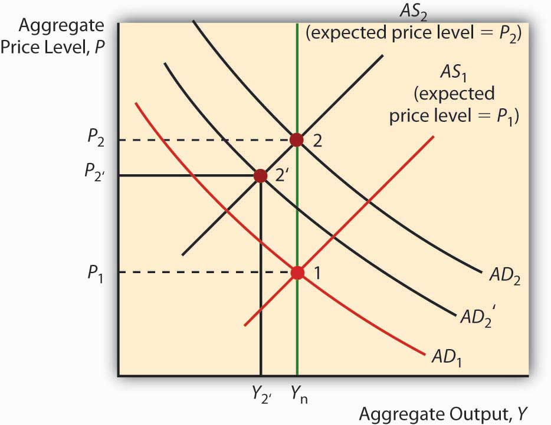

By the end of this chapter, students should be able to:
Rational expectations is an economic theory that postulates that market participants input all available relevant information into the best forecasting model available to them. Although individual forecasts can be very wide of the mark, actual economic outcomes do not vary in a predictable way from participants’ aggregate predictions or expectations. Perhaps Abraham Lincoln summed it up best when he asserted that “you can fool some of the people all of the time, and all of the people some of the time, but you cannot fool all of the people all of the time.”www.econlib.org/library/Enc/RationalExpectations.html
That might sound like a trite insight, but the theory of rational expectations has important implications for monetary policy. In a quest to understand why policymakers had such a poor record, especially during the 1970s, Len Mirman (University of Virginia),www.virginia.edu/economics/mirman.htm Robert Lucas (University of Chicago),home.uchicago.edu/~sogrodow Thomas Sargent (New York University),homepages.nyu.edu/~ts43 Bennett McCallum (Carnegie-Mellon),public.tepper.cmu.edu/facultydirectory/FacultyDirectoryProfile.aspx?ID=96 Edward Prescott (Arizona State),www.minneapolisfed.org/research/prescott and other economists of the so-called expectations revolution discovered that expansionary monetary policies cannot be effective if economic agents expect them to be implemented. Conversely, to thwart inflation as quickly and painlessly as possible, the central bank must be able to make a credible commitment to stop it. In other words, it must convince people that it can and will stop prices from rising.
During the American Revolution, the Continental Congress announced that it would stop printing bills of credit, the major form of money in the economy since 1775–1776, when rebel governments (the Continental Congress and state governments) began financing their little revolution by printing money. The Continental Congress implemented no other policy changes, so everyone knew that its large budget deficits would continue. Prices continued upward. Why?
The Continental Congress did not make a credible commitment to end inflation because its announcement did nothing to end its large and chronic budget deficit. It also did nothing to prevent the states from issuing more bills of credit.
Lucas was among the first to highlight the importance of public expectations in macroeconomic forecasting and policymaking. What matters, he argued, was not what policymakers’ models said would happen but what economic agents (people, firms, governments) believed would occur. So in one instance, a rise in the fed funds rate might cause long-term interest rates to barely budge, but in another it might cause them to soar. In short, policymakers can’t be certain of the effects of their policies before implementing them.
Because Keynesian cross diagrams and the IS-LM and AS-AD models did not explicitly take rational expectations into account, Lucas, Sargent, and others had to recast them in what is generally called the new classical macroeconomic model. That new model uses the AS, ASL, and AD curves but reduces the short run of aggregate demand shocks to zero if the policy is expected. So, for example, an anticipated EMP shifts AD right but immediately shifts AS left as workers spontaneously push for higher wages. The price level rises, but output doesn’t budge. An unanticipated EMP, by contrast, has the same effect as described in earlier chapters—a temporary (but who knows how long?) increase in output (and a rise in P followed by another when the AS curve eventually shifts left).
Now get this: Y* can actually decline if an EMP is not as expansionary as expected! If economic actors expect a big shift in AD, the AS curve will shift hard left to keep Y* at Ynrl, as in Figure 26.1 "The effect of an unexpectedly weak EMP". If the AD curve does not shift as far right as expected, or indeed if it stays put, prices will rise and output will fall, as in the following graph. This helps to explain why financial markets sometimes react badly to small decreases in the Fed’s fed funds target. They expected more!
Figure 26.1 The effect of an unexpectedly weak EMP
What this means for policymakers is that they have to know not only how the economy works, which is difficult enough, they also have to know the expectations of economic agents. Figuring out what those expectations are is quite difficult because economic agents are numerous and often have conflicting expectations, and weighting them by their importance is super-duper-tough. And that is at T1. At T2, nanoseconds from now, expectations may be very different.
The new classical macroeconomic model aids the cause of nonactivists, economists who believe that policymakers should have as little discretion as possible, because it suggests that policymakers are more likely to make things (especially P* and Y*) worse rather than better. The activists could not stand idly by but neither could they ignore the implications of Lucas’s critique of prerational expectations macroeconomic theories. The result was renewed research that led to the development of what is often called the new Keynesian model. That model directly refutes the notion that wages and prices respond immediately and fully to expected changes in P*. Workers in the first year of a three-year labor contract, for example, can’t push their wages higher no matter their expectations. Firms are also reluctant to lower wages even when unemployment is high because doing so may exacerbate the principal-agent problem in the form of labor strife, everything from slacking to theft, to strikes. New hires might be brought in at lower wages, but if turnover is low, that process could take years to play out. Similarly, companies often sign multiyear fixed-price contracts with their suppliers and/or distributors, effectively preventing them from acting on new expectations of P*. In short, wages and prices are “sticky” and hence adjustments are slow, not instantaneous as assumed by Lucas and company.
If that is the case, as Figure 26.2 "Effect of an EMP in the new Keynesian model" shows, anticipated policy can and does affect Y*, although not as much as an unanticipated policy move of the same type, timing, and magnitude would. The Takeaway is that an EMP, even if it is anticipated, can have positive economic effects (Y* > Ynrl for some period of time), but it is better if the central bank initiates unanticipated policies. And there is still a chance that policies will backfire if wages and prices are not as sticky as people believe, or if expectations and actual policy implementation differ greatly.
Figure 26.2 Effect of an EMP in the new Keynesian model

Adherents of the new classical macroeconomic model believe that stabilization policy, the attempt to keep output fluctuations to a minimum, is likely to aggravate changes in Y* as policymakers and economic agents attempt to outguess each other—policymakers by initiating unanticipated policies and economic agents by anticipating them! New Keynesians, by contrast, believe that some stabilization is possible because even anticipated policies have some short-run effects due to wage and price stickiness.
In the early 1980s, U.S. President Ronald Reagan and U.K. Prime Minister Margaret Thatcher announced the same set of policies: tax cuts, more defense spending, and anti-inflationary monetary policy. In both countries, sharp recessions with high unemployment occurred, but the inflation beast was eventually slain. Why did that particular outcome occur?
Tax cuts plus increased defense spending meant larger budget deficits, which spells EFP and a rightward shift in AD. That, of course, ran directly counter to claims about fighting inflation, which were not credible and hence not anticipated. But the Fed and the Bank of England did get tough by raising overnight interest rates to very high levels (about 20 percent!). As a result, the happy conclusions of the new classical macroeconomic model did not hold. The AS curve shifted hard left, while the AD curve did not shift as far right as expected. The result was that prices went up somewhat while output fell. Eventually market participants figured out what was going on and adjusted their expectations, returning Y* to Ynrl and stopping further big increases in P*.
Fighting inflation requires the central bank to hold the line on AD, even in the face of a leftward shift in the AS curve that causes a recession (Y* < Ynrl). The question is, How much will fighting inflation “cost” the economy in terms of lost output? According to the pre-Lucas AS-AD model, about 4 percent per year for each 1 percent shaved from inflation! The new classical macroeconomic model, by contrast, is much more optimistic. If the public knows and believes that the central bank will fight inflation, output won’t fall at all because both the AD and the AS curves will stay put. Workers won’t fight for higher wages because they expect P* will stay the same. An unanticipated anti-inflation stance, by contrast, will cause a recession. The moral of the story told by the new classical macroeconomic model appears to be that the central bank should be very transparent about fighting inflation but opaque about EMP!
The new Keynesian model also concludes that an unanticipated anti-inflation policy is worse than an anticipated and credible one, though it suggests that some drop in Y* should be expected due to stickiness. A possible solution to that problem is to slowly ease money supply growth rather than slamming the brakes on. If the slowing is expected and credible (in other words, if economic agents know the slowing is coming and fully expect it to continue until inflation is history), the AS curve can be “destickyfied” to some degree. Maybe contracts indexed to inflation will expire and not be renewed, new contracts will build in no or at least lower inflation expectations, or perhaps contracts (for materials or labor) will become shorter term. If that is the case, when money supply growth finally stops, something akin to the unsticky world of the new classical macroeconomic model will hold; the AS curve won’t shift much, if at all; and inflation will cease without a major drop in output.
How can central bankers increase their credibility? One way is to make their central banks more independent. Another is not to repeatedly announce A but do B. A third is to induce the government to decrease or eliminate budget deficits.
Figure 26.3 The three major macro models compared

Figure 26.3 "The three major macro models compared" summarizes the differences between the pre-Lucas AS-AD model, the new classical macroeconomic model, and the New Keynesian model.
In Bolivia in the first half of 1985, prices rose by 20,000 percent. Within one month, inflation was almost eliminated at the loss of only 5 percent of gross domestic product (GDP). How did the Bolivians manage that? Which theory does the Bolivian case support?
A new Bolivian government came in and announced that it would end inflation. It made the announcement credible by reducing the government’s deficit, the main driver of money expansion, in a very credible way, by balancing its budget every single day! This instance, which is not atypical of countries that end hyperinflation, supports the two rational expectation-based models over the pre-Lucas AS-AD model, which predicts 4 percent losses in GDP for every 1 percent decrease in the inflation rate. The fact that output did decline somewhat may mean that the policy was not credible at first or it may mean that the new Keynesian model has it right and the AS curve was a little bit sticky.
Gali, Jordi. Monetary Policy, Inflation, and the Business Cycle: An Introduction to the New Keynesian Framework. Princeton, NJ: Princeton University Press, 2008.
Lucas, Robert, and Thomas Sargent. Rational Expectations and Econometric Practice. Minneapolis: University of Minnesota Press, 1981.
Scheffrin, Steven. Rational Expectations. New York: Cambridge University Press, 1996.